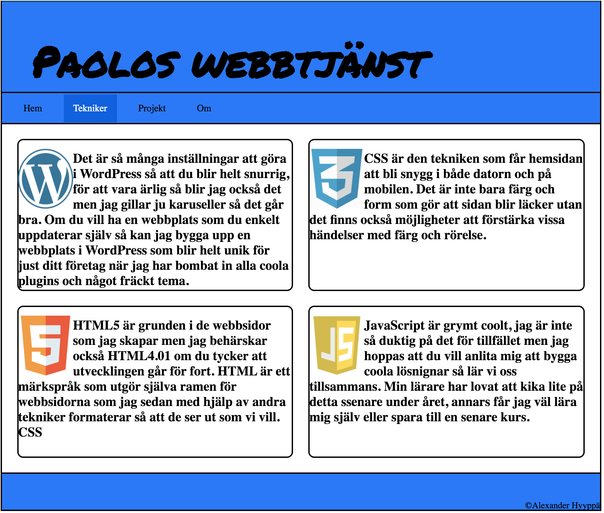

Paolos webbtjänst

Mitt första projekt gjorde jag för den stora fruktgrossisten Eva som inte bara har flera olika typer av frukt utan också väldigt många lådor med frukt. Coolt var det att få jobba med Eva, mätt var jag mest hela tiden också.

Det stora resebolaget Hit & ditresor lät mig bygga deras helt nya webbplats. Lite hjälp fick jag faktiskt av en kille som heter Erik men jag orkade inte lyssna på allt han sade så vissa saker gjorde jag helt på egen hand. Grymt nöjda var de med projektet så jag fick med mig flera kartonger med broschyrer hem.
